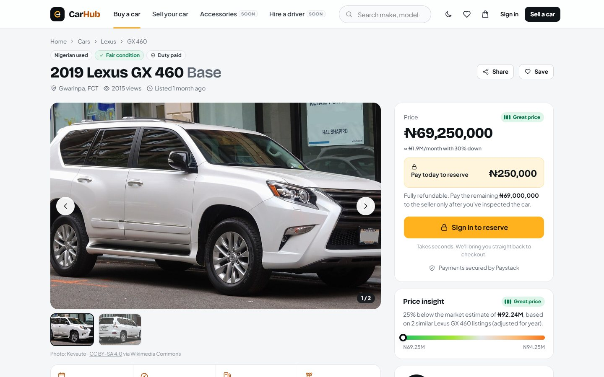

Case study · Marketplace and payments
CarHub
Nigeria’s marketplace for verified cars. Reserve online with a refundable deposit, inspect in person, then pay the balance.

Buying a car online in Nigeria usually means scrolling through unverified listings, then wiring money to a stranger. Nobody pays fifty million naira by card for a car they haven’t seen, so CarHub follows how a car sale really happens.
Every listing is reviewed before it goes live. A buyer reserves with a refundable ₦250,000 deposit, which takes the car off the market. The seller confirms an inspection slot. The buyer inspects with their own mechanic, then pays the balance or cancels for a refund.
The hardest problemTwo buyers, one car
Two people can press “Pay” for the same car in the same second. Checkout locks the car rows inside a transaction and checks they’re still available. The second buyer is told the car has just gone, and nobody is charged for a car that’s already taken.
with transaction.atomic():
# Lock the rows so two buyers can't reserve the same car at once.
locked = list(Car.objects.select_for_update().filter(
pk__in=[c.pk for c in cars], status='available'))cars/views.py.Real timePush a nudge, not the data
Live trips, chat and notifications run over WebSockets. A broadcast only says “this trip changed”. Each screen then rebuilds its own view with the same permission checks as the normal pages, after the database has committed.

QualityWhat the tests prove
| Area | Checked by tests |
|---|---|
| Checkout | Exact totals; a car reserved by someone else mid-checkout |
| Payments | Webhook signatures; paid only after Paystack verifies the amount |
| Accounts | One-time codes never appear in the subject line |
| Real time | Strangers are refused; the ops feed is staff-only |
The demo runs on Render’s free tier and can take about 30 seconds to wake.